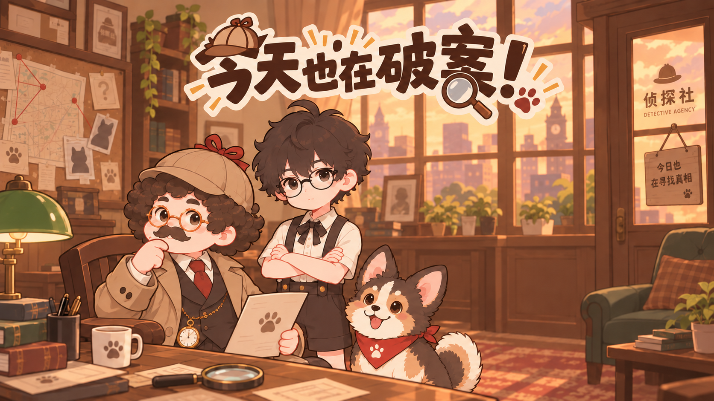
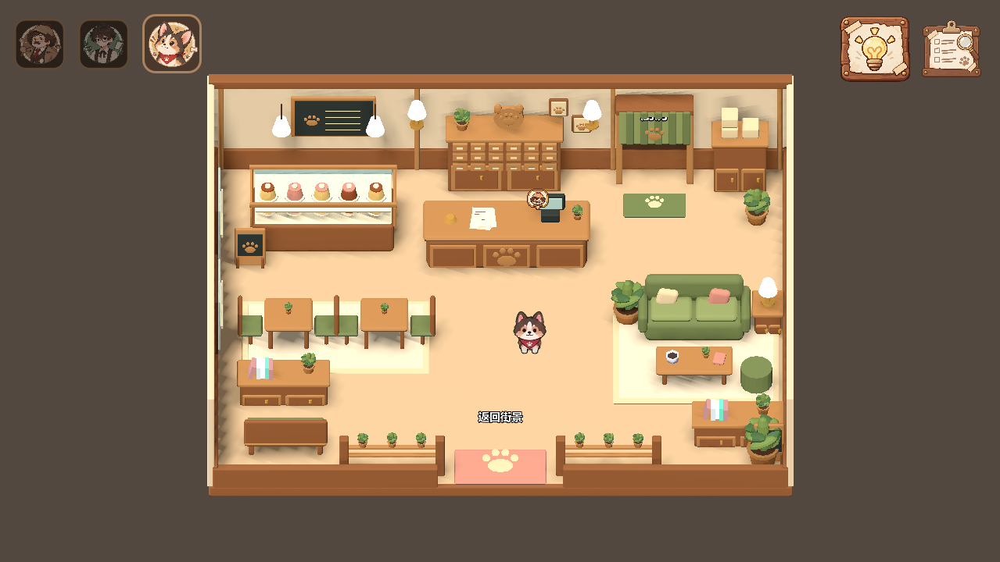
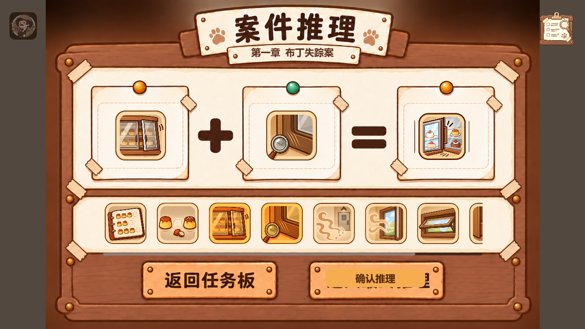

王侦探
通过对话、判断和证据链推进案件。后续计划加入“回溯关键节点”的专属能力，让获得新信息后的重新判断成为玩法。

项目定位
玩家在轻松的宠物店日常中切换角色、观察场景并收集线索，再通过证据组合推进案件。主线保持清晰，隐藏任务、彩蛋对话与角色专属玩法则让探索本身也有回报。



核心循环
角色差异调查
通过对话、判断和证据链推进案件。后续计划加入“回溯关键节点”的专属能力，让获得新信息后的重新判断成为玩法。
关注时间、细节和物证。满足前置条件后，玩家可进入深入调查，从已知场景中找出新的信息。
通过气味追踪与动物交流获取普通角色无法发现的信息；以实时气味进度条让玩家理解目标与操作反馈。
设计与迭代
关键线索只展示数量，不提前暴露内容；隐藏任务以插图和名称提供间接线索，形成非主线探索回报。
从简单、困难两档固定模式调整为玩家主动触发的限时提示，让玩家在卡关时自行决定是否需要帮助。
根据反复测试发现的卡点，补充气味进度反馈，并将三角色同时移动调整为单角色显示、自由切换。
玩法演示
展示前置教学、角色切换、深入调查、旺财气味追踪、线索组合、最终问答与结案剧情。
我负责的内容
电子信息工程 2026 届本科生｜可投递深圳、上海、杭州